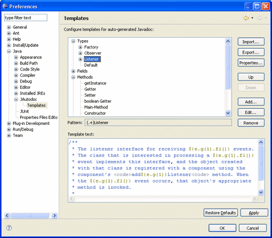
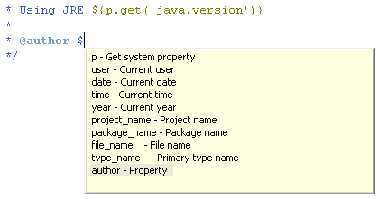
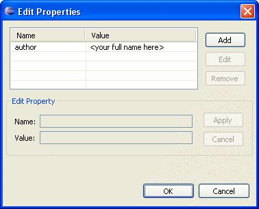
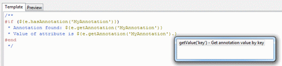

|
|
| JAutodoc - Eclipse Plugin | ||
|---|---|---|
Starting with Release 1.3 of JAutodoc it is possible to define
Velocity
templates for Javadoc and file headers.
Javadoc TemplatesThe idea of using Javadoc templates is to define patterns (regular expressions) for element names or signatures and a related Javadoc template. If an element matches a pattern, the corresponding template is applied to it. Inside a template the variable ${e} will be substituted by the text, that matches the given pattern (i.e. the element name or signature).If the pattern contains groups marked by parentheses, they can be accessed by ${e.g(n)}, where n is the group index starting at 1 (0 is equal to ${e}). Templates can be nested, so for example a Method matches a nested template only if the declaring Type matches the parent template. The parent matching element is accessible through ${e.p()}. The values of these variables can be modified by several manipulation methods like ${e.fl()}, which means "First char to lower". Content assist for these methods is available when typing a dot.  Edit TemplatesA template consists of a unique name, a pattern, a example that matches the pattern, the option to use element name or signature for matching the pattern and the template text. The pattern has to be a regular expression conform to the java.util.regex Package. Inside template text the Velocity Template Language (VTL) and pre-defined Variables can be used.
PreviewGo to the Preview tab to see the matching groups and the resulting template text.
Variables and PropertiesThere are some pre-defined variables that can be used inside Javadoc and Header templates. Additionally you can get a system property by ${p.get('<property key>')} or define and use your own properties, e.g. author containing your full name to use with the@author tag.
 AnnotationsSupport for evaluation of annotations. |
||